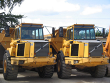
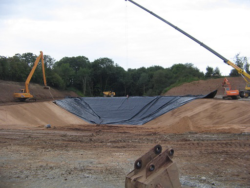
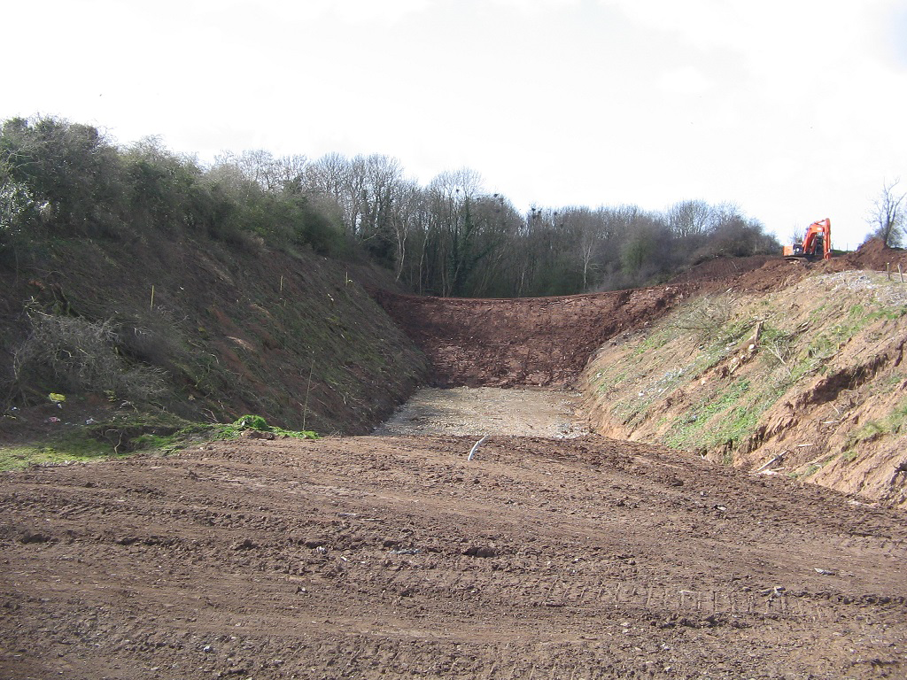
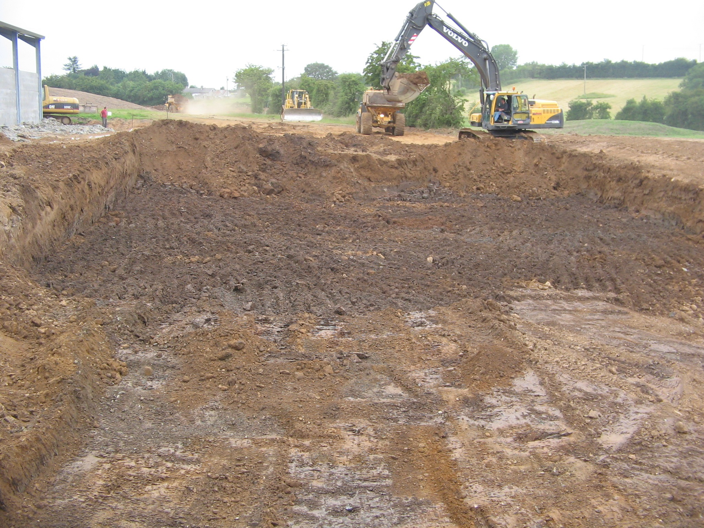
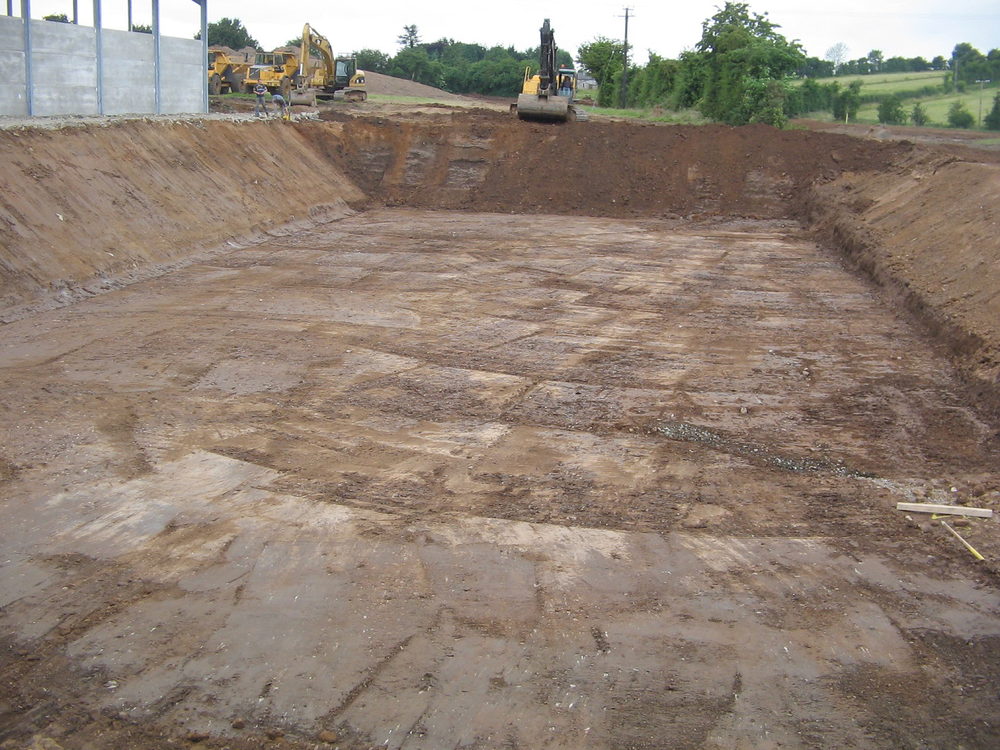
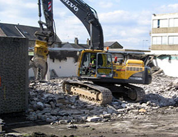
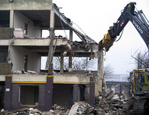

SELECTED WORK
On site. At work.
Explore the finished work, workshop details and applications.
12 examples

Plant
Dozers in the plant yard ↗

Plant
Excavators and diggers in the yard ↗

Plant
Wheeled excavator ↗

Plant
Articulated dump trucks ↗

Earthworks
Earthworks on a sloping site ↗

Earthworks
Plant working on an earthworks site ↗

Earthworks
Excavated site ↗

Earthworks
Cleared site with excavators ↗

Earthworks
Prepared development ground ↗

Demolition
Excavator working beside a structure ↗

Demolition
Building demolition in progress ↗

Civil Engineering